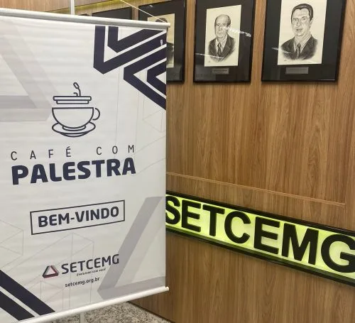
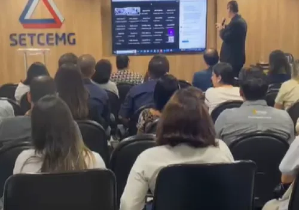
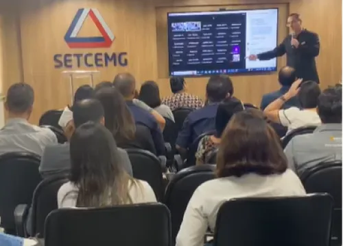

Estratégias para evitar passivos trabalhistas na contratação de motoristas autônomos
No mundo dos transportes, as empresas enfrentam constantes desafios para garantir que suas operações sejam eficientes e, ao mesmo tempo, estejam em conformidade com as regulamentações trabalhistas. Especialmente quando se trata da contratação de motoristas autônomos, é essencial compreender as estratégias.
No último dia 22 de Abril, o Dr. Jeferson Costa, renomado especialista em transportes, em parceria com o SETCEMG, ministrou um treinamento online que explorou esse tema crucial. O evento, que ocorreu das 08h30min às 12h30min, foi uma oportunidade valiosa para profissionais do setor adquirirem conhecimentos sobre como mitigar riscos trabalhistas na contratação de motoristas autônomos.
Durante o treinamento, uma variedade de tópicos foi abordada, incluindo conceitos e requisitos legais, processos de contratação, questões tributárias, monitoramento do colaborador agregado, procedimentos de desligamento e a importância do CIOT (Código Identificador da Operação de Transporte).



A discussão desses temas proporcionou aos participantes uma compreensão abrangente das melhores práticas para garantir a conformidade legal e evitar potenciais passivos trabalhistas ao contratar motoristas autônomos. O conhecimento compartilhado pelo Dr. Jeferson Costa ofereceu uma visão especializada e prática, permitindo que os participantes se sintam mais confiantes em suas operações.
Para aqueles que não puderam participar do evento, fiquem atentos aos próximos treinamentos oferecidos pelo SETCEMG, em parceria com o nosso escritório.
Em nossas redes sociais você também encontra informações e diversos conteúdos. Clique aqui para acessá-las.
Esteja preparado para aprimorar suas habilidades e alcançar novos patamares de sucesso em sua área de atuação!
Paulo Teodoro – Advogados Associados
- Eventos
- Artigos
- Saiba mais sobre o escritório ▸